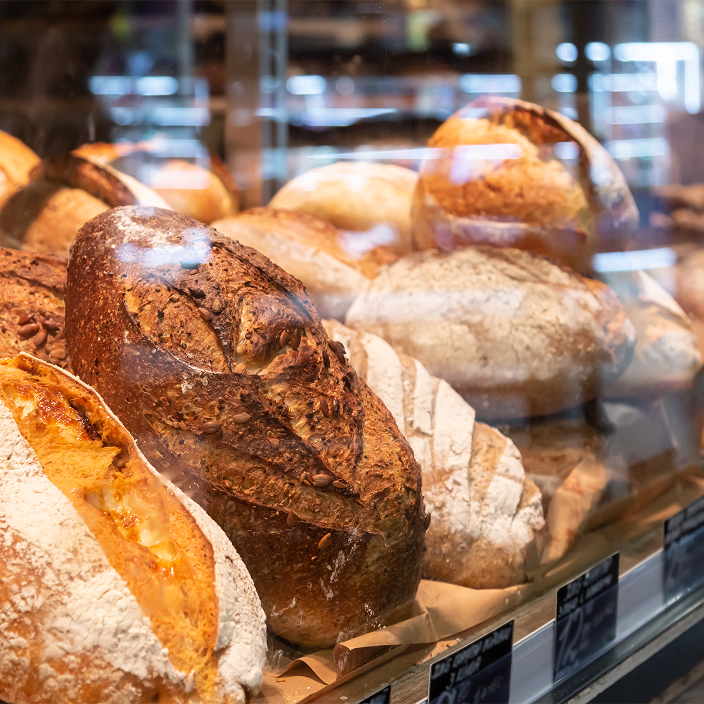

Our Breads, Pastries, and Cakes
Choose an everyday favorite or ask us about something special for your next gathering. Prices below are illustrative starting ranges, not a live checkout.
Plan your next bakery visit
Build your bakery favorites
Choose a few treats to remember. Your picks stay on this browser when you refresh, and you can bring the list to the preorder form.
0 favorites saved
Breads

- Country sourdough: tangy, slow-risen loaf; about $7-$10.
- Whole-grain sandwich bread: hearty and sliceable; about $6-$9.
- Seasonal savory loaf: rotating herbs and additions; about $8-$12.

Pastries
Butter croissants, cinnamon rolls, and rotating fruit pastries; about $3-$6 each. Selection may vary throughout the day.
Cakes and Celebrations
Simple celebration cakes and seasonal specialty cakes; about $25-$65, depending on size and decoration. Request lead time and allergy information before placing a preorder.